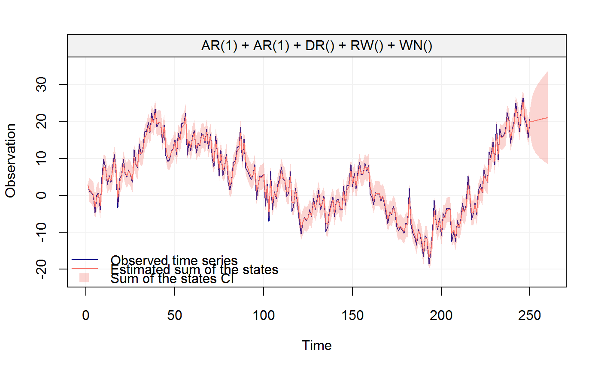
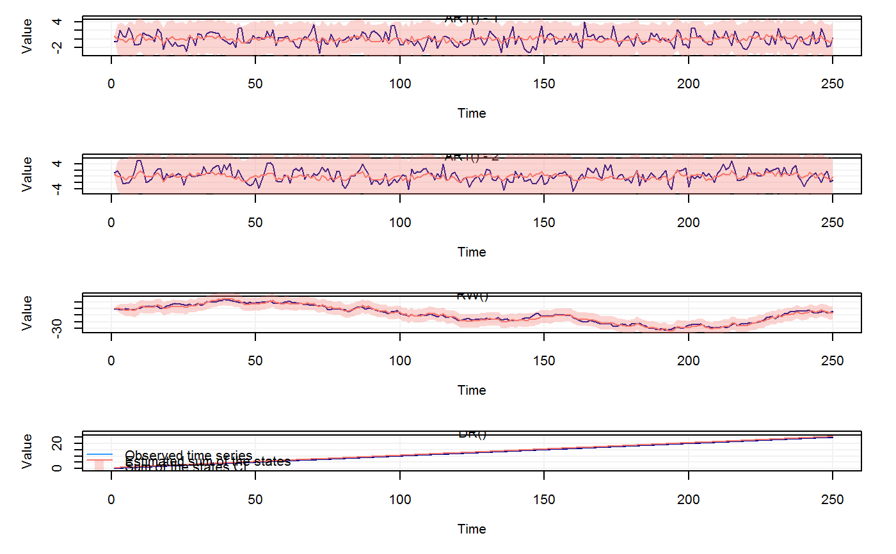
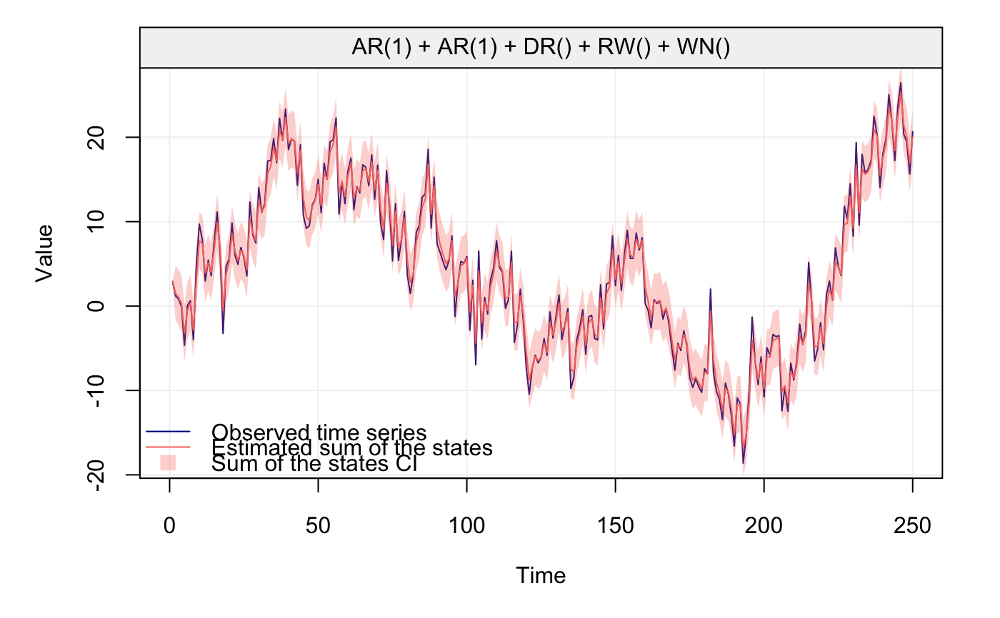
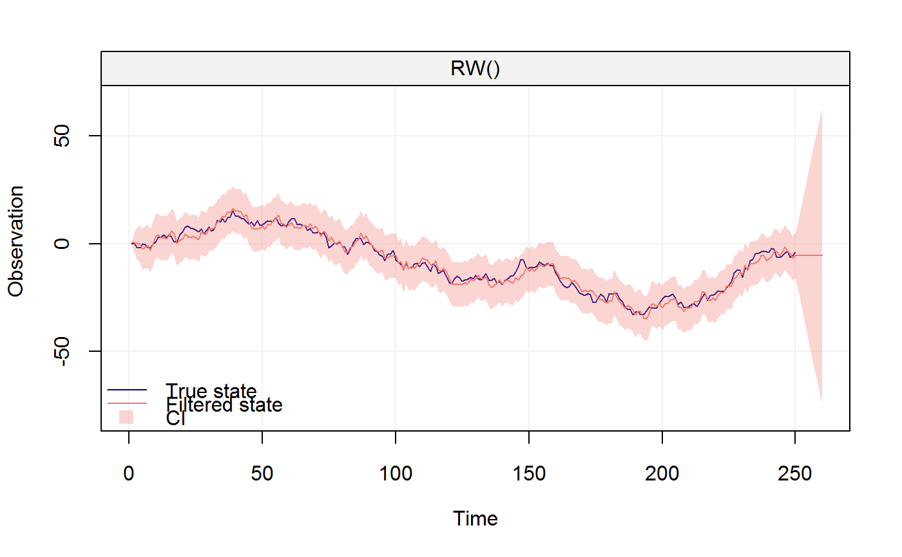

The function plots the observed time serie, the sum of the estimated states and the confidence intervals of the estimate
# S3 method for KF plot(x, plot_state = "all", ...)
| x | A |
|---|---|
| plot_state | A numeric value indicating which state to plot. Default is "all". |
| ... | Additional arguments affecting the plot produced. |
#Filter a 2*AR1 + DR + RW + WN process set.seed(123) model = AR(.3, 2) + AR(.5,3) + DR(.1) + RW(3) + WN(4) n = 250 y = gen_lts(n = n, model = model) my_res = kalman_filter(model = model, y = y) plot(my_res)